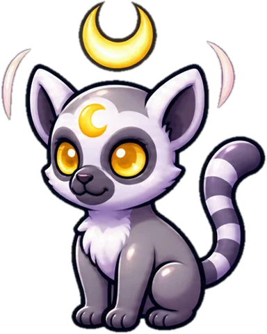

 Psychic
Psychic Light
LightTap a stage to read its story.
Lunoxkit is a round-eyed lemur cub with grey-white fur and a crescent moon mark glowing softly on its forehead. It sits very upright, both arms slightly raised as if balancing, and watches everything with enormous pale eyes. Found in the Psychic Temple's border trees at dusk, it perches on low branches and turns to track movement below with eerie accuracy. Guardians who have one say it wakes them exactly one minute before sunrise every morning without fail, somehow knowing the moment before the light comes.
Field note: Lunoxkit can count the number of leaves on a branch by looking at it once - researchers tested this and it was never wrong.
Light Grove. Lunoxkit and its family are found in the Light Grove. See everyone who lives there.
Share a Bond Food that matches its types to become friends. Lunoxkit loves:
A Bond Food is not a trick. It joins your spirit with the Kimuro's spirit, and only when it chooses you.
Print the Kimuro adventure packs: mazes, cards, a board game and Bond Mark medals.
See the printable packs